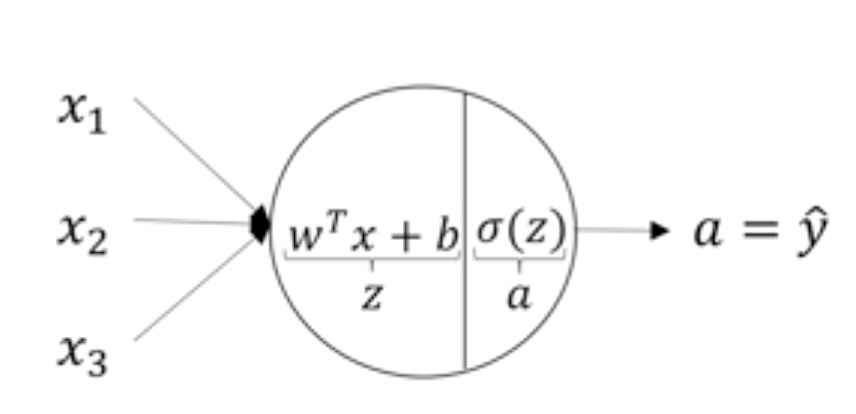
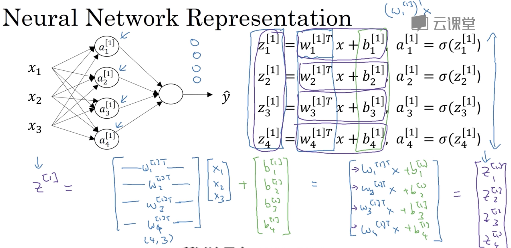

this note will include:
- neural network foundation
- coding notes
- avoid bugs precautions
- questions like ‘why use … ?’
neural network foundation
(take classify question as an example)
- logistic regression
- lost function
- cost function
- back propagation: calculate derivative of each params and update them
neural network: every layer has input z and output a

neuron from this link lecture 3.3
what happened in every layer from this link lecture 3.3- activative function
- sigmoid (0,1)
- tanh (-1, -1)
in hidden layer, tanh seems better than sigmoid because the range is between -1 and 1, so the average value is closer to 0. But for out put layer, sigmoid will be better because it makes sense for y hat(output) to be a number between 0 and 1 - ReLU(rectified linear unit): a = max(z, 0). if z is very large or very small, the slope of the function will end up being close to zero, so it will slow down gradient descent. So using ReLU will accerlate the process of learning.
- leaky ReLU: might be max(0.01z, z), difference from ReLU: when z < 0, the slope will not be 0
- tips
- if output is 0 or 1, sigmoid function maybe suitable for output layer. And for all other units on ReLU
coding notes
np.dot:
calculate the inner product of two array;
equal to matrix multiplication when two params are 2-D arrays (np.matmul)np.exp(v)
np.log(v)
np.abs(v)
np.maximum(v, 0): to take the max of every element of v with 0
v**2: takes element-wise square of each element of v
np.dow(w.T, X) + b: python will transfer b to a vector
b = x.sum(axis=0): sum columns
a/b.reshape(1,4): every line of a will divide by b
(m,n) + (1,n): python will transfer (1,n) to (m,n) and then add them
avoid using for loops, since using for loop is much slower than vectorization.
avoid bugs precautions
- about shape:
- a = np.random.randn(5)
shape of a will be (5,), and a.T will look the same as a. Plus, when calculate np.dot(a,a.T) we will get a number instead of an outer product or matrix
so when coding not use data structures where the shape is n or rank 1 array, generate a use np.random.randn(5,1)(5 by 1).1
2
3
4# can also use the following code to check
assert(a.shape == (5,1))
# can also use reshape
a.reshape(5,1)
- a = np.random.randn(5)
questions
why need a nonlinear activation function?
- if not use, the result can be transferred to np.matmul((w.T),x) + b, so ‘unless you throw in a non-linearity in there, then you’re not computing more interesting functions’ from this link lecture 3.7
- the only place that can use linear activation function is regression problem(y is a real number, eg. predict house prices)
why need deep neural networks?
- use deep neural networks can combine simple features to detect more complex things
- circuit theory(permutation, use more layer to decrease the neuron in each layer)